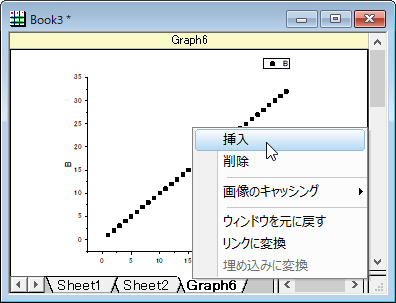
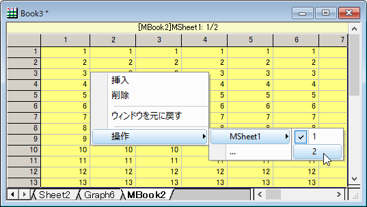

現在のワークブックに異なるウィンドウタイプの追加が必要になる場合があります。例えば、分析テンプレートを作成する場合です。この場合、既存のシートタブを右クリックして～を追加を選択します。
シートとして異なるウィンドウタイプを追加する場合
コンテキストメニューを使用してグラフを新しいシートとして追加すると、グラフウィンドウのショートネームが新しいシートの名前として使用され、グラフは現在のシートの最初のセルに挿入されます。埋め込みグラフをダブルクリックするとグラフウィンドウが開き、カスタマイズできます。編集が完了したら、戻るボタン をクリックしてグラフを元に戻します。
をクリックしてグラフを元に戻します。
埋め込みグラフを右クリックして、以下のことが可能です。

ワークシートに埋め込まれたグラフでは、埋め込まれたオブジェクトをダブルクリックして開かないくても、グラフと統合したりエクスポートできます。グラフの統合かエクスポートを選択する時、グラフの統合とグラフのエクスポート ダイアログはどちらも現フォルダ中の全て（埋め込みを含む)選択を利用できます。 より詳細な情報はOrigin Blog.をご覧ください。 |
コンテキストメニューを使用して新しいシートとして行列を追加すると、行列ウィンドウのショートネームが新しいシートの名前に使用され、行列が現在のシートの最初のセルに挿入され、現在のアクティブなオブジェクトがタイトルセルに表示されます。
埋め込み行列をダブルクリックして行列ウィンドウを開き、操作を実行できます。操作が完了したら、戻るボタン をクリックして行列を戻します。
をクリックして行列を戻します。
埋め込み行列を右クリックして、以下のことが可能です。

ワークブックのシートに新しいノートウィンドウを追加することもできます (グラフや行列とは異なり、 既存のノートウィンドウをシートとして追加することはできません)。
分析テンプレートに追加されたHTMLレポート（次を参照）は、ワークブックに含まれるすべての分析およびグラフ作成操作についての視覚的にわかりやすいサマリーとして機能します。
例えば、 ラーニングセンターを開き（ヘルプ：ラーニングセンターもしくはF11キーを押す）、解析サンプルタブをクリックします。サンプルドロップダウンリストから一般分析を選択し、地震 - JSONコネクタとHTMLレポートというプロジェクトをダブルクリックします。。
プロジェクトが開くと、先週のデータをインポートするように求めるメッセージが表示されます。OKと答えて、USGSの地震データベースからデータをインポートし、分析テンプレートのEarthquakesを更新します。なお、HTMLNoteウィンドウは、Earthquakeワークブックに追加されたHTMLレポートであることに注意してください。埋め込まれたページは表示できるように「ポップアウト」されていますが、閉じるボタン をクリックすると、ウィンドウがHTMLレポートシートとしてブックに再挿入されます。
をクリックすると、ウィンドウがHTMLレポートシートとしてブックに再挿入されます。
ワークブックにウィンドウを追加するための論理的アプリケーションの1つは、バッチ処理操作で利用できる自己完結型の分析テンプレートを作成することです。
分析テンプレートの詳細については、以下のトピックを参照して下さい。